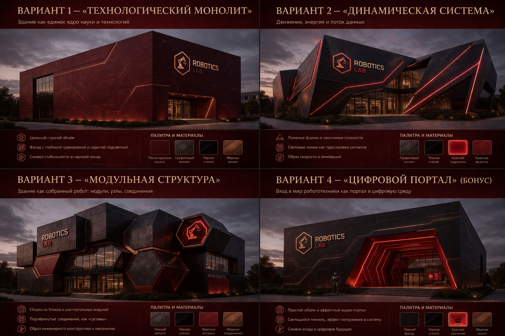

НазадСтиль здания

Стиль здания
Архитектурная концепция лаборатории робототехники — футуристичный фасад, LED-подсветка, стеклянные панели и минималистичный дизайн.
Источники вдохновения
Концепции архитектурных решений лаборатории робототехники разработаны на основе анализа современных культурно-выставочных пространств, таких как арт-кластер ЗИЛАРТ, Мультимедиа Арт Музей (МАММ, Москва) и Алматинский музей современного искусства.
В проектах были заимствованы и интерпретированы следующие принципы:
- ●чистота и минимализм экспозиционных пространств
- ●выразительная геометрия и пластика объёмов
- ●контрастные материалы и работа со светом
- ●создание запоминаемого архитектурного образа
Каждый из представленных вариантов переосмысляет данные подходы через призму тематики робототехники, формируя уникальные образы: от монолитной устойчивости до динамики и модульности технологических систем.
Концепт-арты
